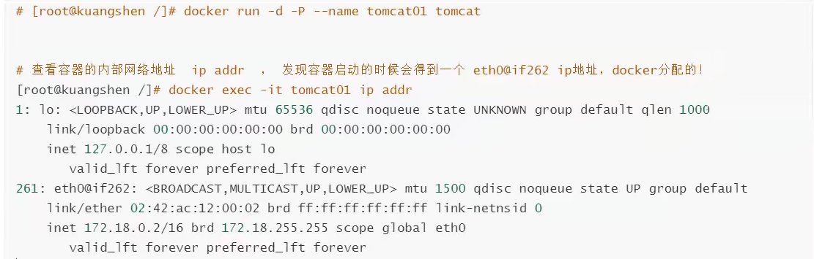

理解Docker0
使用 ip addr 查看网卡
1、lo 本机回环地址
2、eth0 本机网卡
3、docker0 docker生成的网卡
问题：docker是如何处理容器之间的网络访问的？


原理：


网络模型图：


容器互联 --link：

反向要ping通，也必须配置。
探究link命令的原理：
docker network


自定义网络：

网络模式：
bridge：桥接模式（默认，自定义网络也使用桥接模式）
none：不配置网络
host：和宿主机共享网络
container：容器内网络连通！（用的少！局限很大）（多个容器共享一个ip（网卡））
在启动容器的时候，--net 参数默认就是 bridge

之后启动容器，就可以放到自定义网络中了。

将新创建的容器都使用自定义网络

自定义的网络docker已经帮我们维护好了对应的关系，推荐使用！
好处：
readis集群、mysql集群-不同的集群使用不同的网络，保证集群的安全和健康的。
网络连通


容器连接到一个网络上。


结论：docker自己有四种网络模式：
bridge：桥接模式（默认，自定义网络也使用桥接模式）
none：不配置网络
host：和宿主机共享网络
container：容器内网络连通！（用的少！局限很大）
默认使用的是 bridge模式，使用evth-path技术连接 Docker0（相当于交换机），但是这个网络内的容器之间不能通过容器名或者容器ID连接，可以通过link 解决，但是一次只能设置一个（比如容器1--->容奇2,并且是单向，反向则不行,容器2不能通过容器名访问容器1） 。可以使用自定义网络，自定义网络中的全部容器都可以相互通过容器名访问，跨网络可以通过docker network connect命令实现（原理直接将需要连接的容器加入指定网络，一个容器多个ip，相当于配置了多个网卡）。推荐使用自定义网络，安全。
实战：
部署redis集群
#创建redis网络
docker network create redis --subnet 172.38.0.0/16
#通过shell脚本创建六个redis配置
for port in $(seq 1 6); \
do \
mkdir -p /mkdata/redis/node-${port}/conf
touch /mydata/redis/node-${port}/conf/redis.conf
cat << EOF >/mydata/redis/node-${port}/conf/redis.conf
port 6379
bind 0.0.0.0
cluster-enabled yes
cluster-config-file nodes.conf
cluster-node-timeout 5000
cluster-announce-ip 172.38.0.1${port}
cluster-announce-port 6370
cluster-announce-bus-port 16379
appendonly yes
EOF
done
#开启一个redis容器
docker run -p 6371:6379 -p 16371:16379 --name redis-1 \
-v /mydata/redis/node-1/data:/data \
-v /mydata/redis/node-1/conf/redis.conf:/etc/redis/redis.conf \
-d --net redis --ip 172.38.0.11 redis:5.0.9-alpine3.11 redis-server /etc/redis/redis.conf
#随便进入一个redis容器
docker exec -it redis-1 /bin/sh
#配置redis 集群
redis -cli --cluster create 172.38.0.11:6379 172.38.0.12:6379 172.38.0.13:6379 172.38.0.14:6379 172.38.0.15:6379 172.38.0.16:6379 --cluster-replicas 1